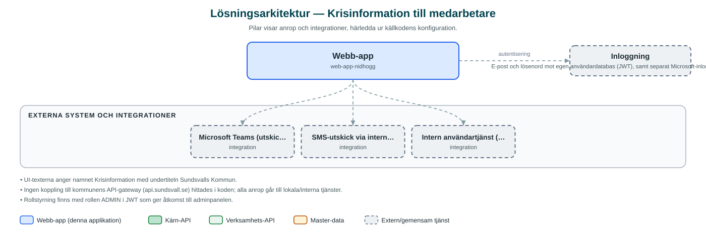

Krisinformation till medarbetare
Verktyg för att snabbt skicka krisinformation till kommunens chefer och medarbetare via SMS och Microsoft Teams.
Om applikationen
Tjänsten låter behöriga användare skapa och skicka utskick med krisinformation till utvalda mottagare inom kommunens organisation. Mottagare kan väljas via ett organisationsträd, fördefinierade grupper (till exempel alla chefer eller alla medarbetare) eller egna sparade grupper.
Meddelanden kan skickas via SMS, Microsoft Teams eller båda kanalerna, och avsändaren kan i efterhand följa upp sina utskick och se mottagarlistor med leveransstatus. En adminpanel finns för att hantera vilka användare som får logga in och göra utskick.
Applikationen bedöms vara under uppbyggnad: den använder en egen lokal användardatabas med e-post och lösenord för inloggning och pekar mot lokala mikrotjänster i utvecklingsmiljö.
Det här stödjer applikationen
- Utskick i flera kanaler – Skicka meddelanden via SMS och/eller Microsoft Teams till valda mottagare.
- Mottagarval via organisationsträd – Välj mottagare från kommunens organisationsstruktur eller fördefinierade grupper som alla chefer och alla medarbetare.
- Egna mottagargrupper – Skapa, spara och hantera egna grupper av mottagare för återkommande utskick.
- Uppföljning av utskick – Se historik över gjorda utskick med mottagare och leveransstatus.
- Adminpanel – Administrera användarkonton och behörigheter för dem som får göra utskick.
Teknisk dokumentation
Nedan beskrivs hur applikationen är uppbyggd, vilka API:er den använder och vad som krävs för att driftsätta den. Informationen är härledd ur källkoden och dess konfiguration på GitHub.
Arkitektur

Applikationen består av en webbaserad frontend (Next.js 15 (App Router), React 19, sk-web-gui, next-intl, Tailwind CSS) och en backend (Next.js API-routes med Prisma mot MySQL, proxy till interna mikrotjänster (notifier, users, teamssender)) som utvecklas i samma kodbas. Inloggning: E-post och lösenord mot egen användardatabas (JWT), samt separat Microsoft-inloggning för Teams-utskick. Övriga integrationer som förekommer i koden: Microsoft Teams (utskick via egen teamssender-tjänst med Microsoft-inloggning), SMS-utskick via intern notifier-tjänst, Intern användartjänst (users).
Teknikstack
- Frontend: Next.js 15 (App Router), React 19, sk-web-gui, next-intl, Tailwind CSS
- Backend: Next.js API-routes med Prisma mot MySQL, proxy till interna mikrotjänster (notifier, users, teamssender)
- Test: Cypress
API-beroenden
Inga prenumerationer på kommunens API-plattform hittades i källkodens konfiguration.
Konfiguration och driftsättning
- .env med DATABASE_URL (MySQL via Docker Compose)
- Proxy-adresser till mikrotjänster: API_PROXY_TARGET_NOTIFIER, API_PROXY_TARGET_USERS, API_PROXY_TARGET_TEAMSSENDER
- NEXT_PUBLIC_TREE_ROOT_ORG_ID för organisationsträdets rot
Noterbart ur källkoden
- UI-texterna anger namnet Krisinformation med undertiteln Sundsvalls Kommun.
- Ingen koppling till kommunens API-gateway (api.sundsvall.se) hittades i koden; alla anrop går till lokala/interna tjänster.
- Rollstyrning finns med rollen ADMIN i JWT som ger åtkomst till adminpanelen.
- Databasen seedas via Prisma och innehåller användare, medarbetare, grupper och meddelanden.
Källkod
Källkoden är öppen och finns hos Sundsvalls kommun på GitHub. I källkodsförrådet finns även instruktioner för att klona, konfigurera och starta applikationen i egen miljö.